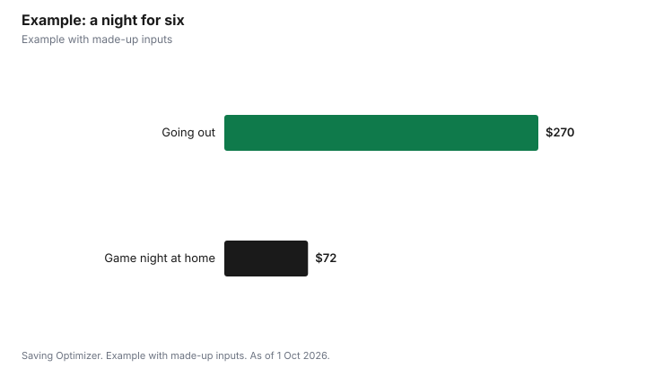

Entertainment · Canada
Movie or Game Night at Home: What It Costs and How to Split It in Canada
A movie or game night at home can cost less per person than a single movie ticket if you plan the food, use free content and share costs. The main expense is food and drink; the movie can be free through your library's streaming apps or a free ad-supported service, and games can be borrowed from some public libraries, such as Newfoundland and Labrador's, which lends board games for up to three weeks. In Ontario, you do not need a permit to serve alcohol to invited guests at home, though you would if you sold drinks. Agree on a split before the night: a potluck, the host covering mains while guests bring drinks, or an even split of receipts.
Key takeaways
- Food and drink are the main costs; content can be free.
- Many libraries offer free film streaming with a card.
- Some libraries lend board games; NL Public Libraries lend for up to three weeks.
- Ontario: no permit to serve alcohol to invited guests at home; selling needs a permit (AGCO).
- Agree on how to split costs before the night.
- Example with made-up inputs: six people for $12 each.
What a night in costs
Statistics Canada's 2023 household spending survey shows the average household spent $8,579 on food from stores and $3,316 on food from restaurants over the year. Home entertaining shifts spending from the second category to the first, which is why a night in usually costs less than going out. The typical cost lines are snacks, a main dish or delivery, drinks, and anything you buy for the night, such as a game or a rental.
| Item | Budget version | Splurge version |
|---|---|---|
| Main food | Homemade pizza, $30 | Delivery, $90 |
| Snacks | Popcorn and chips, $12 | Mixed platters, $40 |
| Drinks | Pop and juice, $10 | Wine and beer, $70 |
| Movie | Library or free service, $0 | Digital rental, $7 |
| Game | Owned or borrowed, $0 | New board game, $55 |
| Total | $52 | $262 |
Free movies
Before paying for a rental, check what you already have. Many public libraries offer free streaming services with a library card, and some free, ad-supported streaming services are available in Canada. If you already pay for a streaming service, look through its catalogue first. A single digital rental is fine for a new release, but a group can usually agree on something already included.
Games without buying
Some public libraries lend board games. Newfoundland and Labrador Public Libraries says borrowing a board game is as easy as borrowing a book, with loan periods of up to three weeks, and that games are available at many locations through its online catalogue. Other libraries, such as the Ottawa Public Library, host board game events for adults, which can be a free night out in themselves. Search your library's catalogue for "board game" before buying one. Card games, trivia you make yourself and game apps that use phones as controllers are other low-cost options. If your group plays often, pooling money for one shared game that circulates among households costs each person a fraction of buying alone.
Drinks and hosting rules
In Ontario, the Alcohol and Gaming Commission says you do not need a special occasion permit to serve alcohol to invited guests in your own home. If you sell alcohol, for example by charging for drinks, you need a permit, so ask guests to bring their own drinks rather than charging at the door. Hosts are responsible for guests' safety, so plan rides home and keep good non-alcoholic choices. Other provinces have their own rules.
Fair ways to split costs
| Method | How it works | Best for |
|---|---|---|
| Potluck | Each guest brings one dish or drink | Regular groups |
| Host plus BYOB | Host covers food; guests bring drinks | Mixed drinkers and non-drinkers |
| Even split | Total receipts divided equally | Friends who order delivery |
| Rotation | Host changes each time and covers the night | Monthly game groups |
| Pay for what you eat | Each person pays for their own order | Groups with very different budgets |
Whatever method you choose, decide before anyone shops, and keep receipts if you split them. Payment apps make splitting easy, but agree on who pays what first to avoid awkwardness.
Making it a regular thing
A monthly movie or game night is one of the easiest ways to cut an entertainment budget without cutting time with friends. Rotating hosts spreads the cost and the clean-up. A shared spreadsheet or group chat can track whose turn it is and what games each person owns, so nobody buys a duplicate. Groups that like variety can theme nights: a decade of movies, a cuisine, or a game genre. Set a soft spending cap per host, such as what one person would spend on a single night out, and stick to it. Over a year, the savings against going out add up, and the habit keeps people from defaulting to expensive plans.
Tips
- Make one big shareable dish instead of individual orders.
- Buy snacks in larger packs and divide them, using unit prices on shelf tags.
- Compare the unit price of kernels you pop yourself with bagged snacks; popping your own is often cheaper per bowl.
- Keep a shared game shelf among friends and rotate.
- Pick the movie or game ahead to avoid paying for a rental nobody finishes.
Example with made-up inputs
These numbers are an example with made-up inputs. Six friends hold a game night. The host makes two homemade pizzas for $30 and buys $12 of snacks; three guests bring drinks worth $10 each; one borrows a board game from the library and another brings a deck of cards. The total is $72, or $12 per person if they even it out so the host is not out of pocket for the food. The same group going out for a movie, snacks and a meal at made-up prices of $45 each would spend $270.
| Item | Who | Cost |
|---|---|---|
| Two homemade pizzas | Host | $30 |
| Snacks | Host | $12 |
| Drinks | Three guests at $10 | $30 |
| Board game | Library | $0 |
| Total | Six people | $72 ($12 each) |

Steps
- Pick a date and the movie or game.
- Check your library for streaming and board games.
- Choose a split method and tell guests.
- Plan one main dish and a few snacks.
- Ask guests to bring drinks rather than selling any.
- Keep receipts and settle up the same night.
Common mistakes
- Ordering individual delivery meals for everyone.
- Charging guests for drinks, which can require a permit in Ontario.
- Buying a new game before checking the library.
- Not agreeing on a split until after the night.
Related: free legal streaming and hosting versus a sports bar.
Sources
- Statistics Canada, Table 11-10-0222-01 Household spending, Canada, regions and provinces (2023), as of 1 Oct 2026.
- Newfoundland and Labrador Public Libraries, Board Games, nlpl.ca, as of 1 Oct 2026.
- Ottawa Public Library, adult board game events, biblioottawalibrary.ca, as of 1 Oct 2026.
- Alcohol and Gaming Commission of Ontario, Special occasion permits, agco.ca, as of 1 Oct 2026.
- Food and outing prices in the examples are made-up inputs.
Frequently asked questions
How much does a movie night at home cost?
Mostly the cost of food and drinks; the movie can be free through a library app or free streaming service.
Can I borrow board games from the library?
Some libraries lend them. Newfoundland and Labrador Public Libraries lends board games with loan periods of up to three weeks.
Do I need a permit to serve alcohol at a game night in Ontario?
No, not to serve invited guests in your own home. You need a permit if you sell alcohol.
How should friends split the cost of a game night?
Choose a method before shopping: potluck, host plus bring-your-own drinks, an even split of receipts or a rotating host.
Is a night in cheaper than going out?
Usually, because the main cost is groceries rather than restaurant meals and tickets. Compare your own receipts for a night out and a night in.
What are free things to do for a game night?
Borrowed board games, card games, homemade trivia and library streaming.
Researched and drafted with AI assistance and fact-checked against official Canadian sources. How we create content.
Disclosure: Saving Optimizer may earn a commission if a partner link is added later, such as a grocery or streaming offer type. No partnership is claimed on this page. Education only.